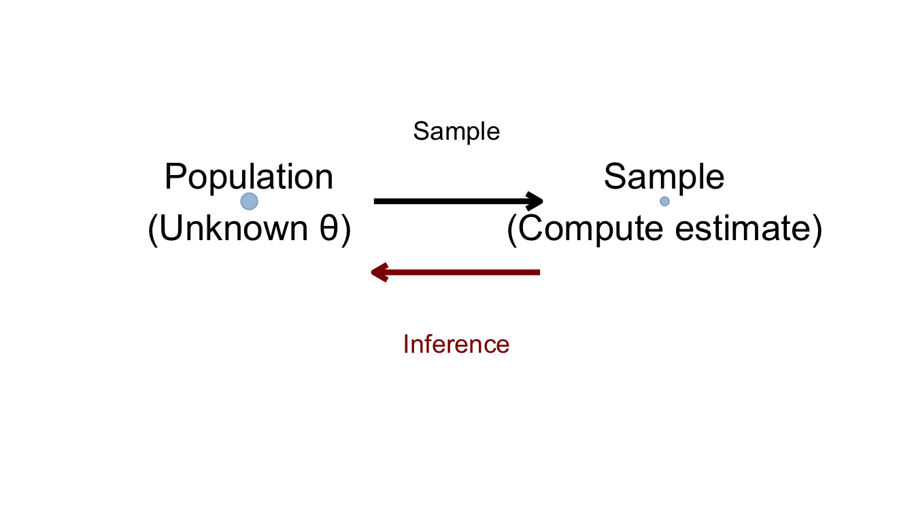
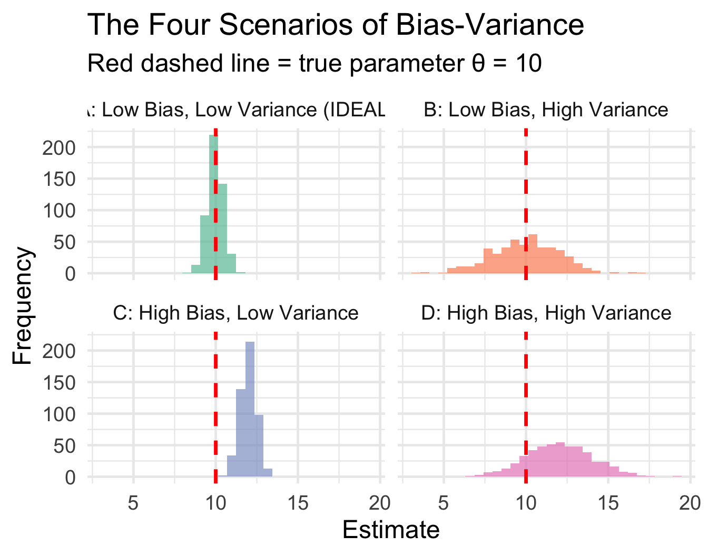
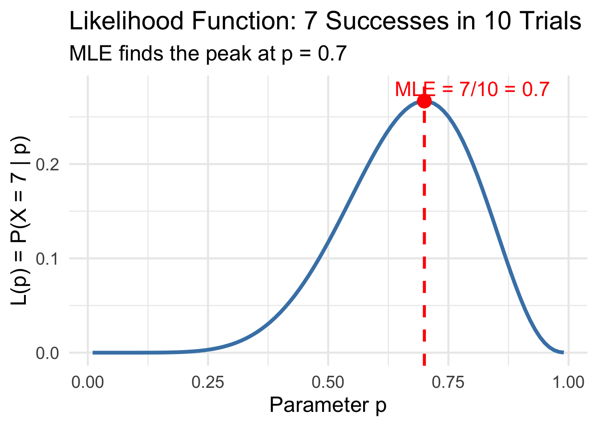
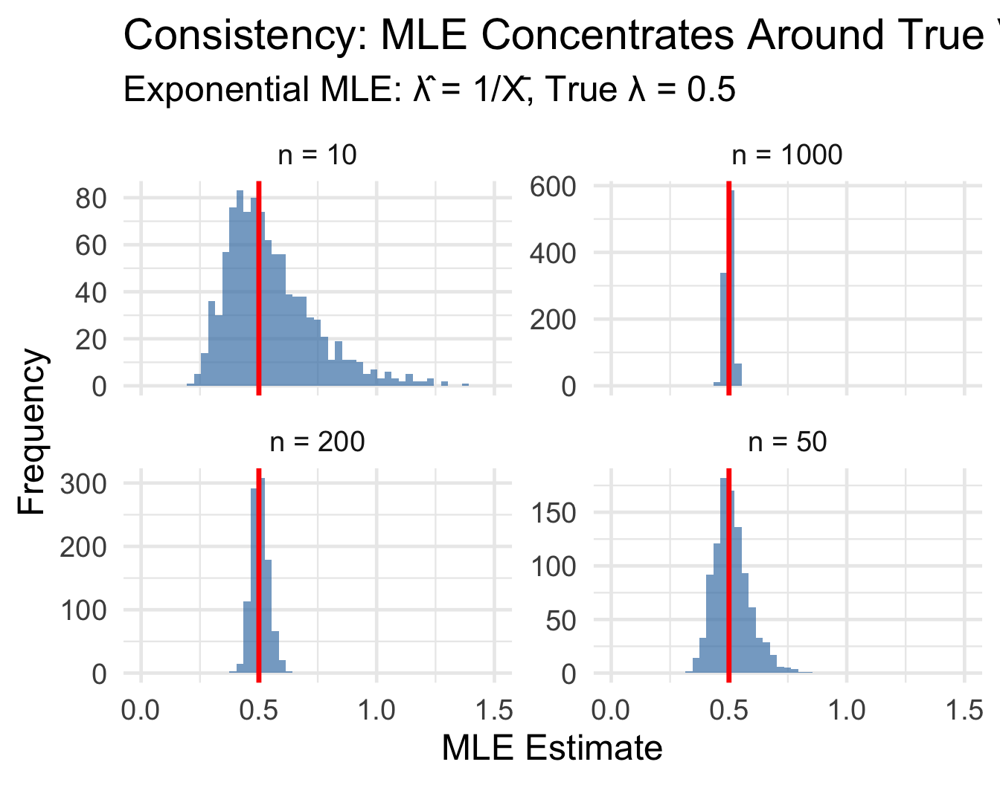
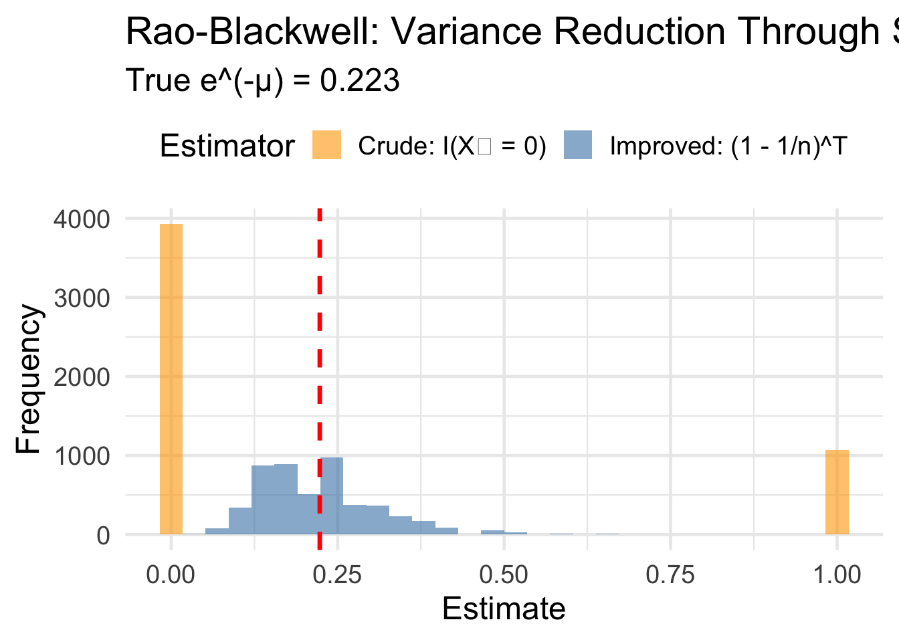

BSTA 551: Statistical Inference
Review: Point Estimation (Lessons 1-5)
Review: The Big Picture of Point Estimation
Where We’ve Been: The Journey So Far
Today: Tie it all together and review key conceps.
The Central Problem of Statistical Inference
We observe data \(X_1, X_2, \ldots, X_n\) from some distribution with unknown parameter \(\theta\). Usually they are identically and independently distributed (i.i.d.), so they make a “random sample.”
The Question: How do we learn about \(\theta\) from the data?
. . .

The Two Key Questions in Point Estimation
Question 1: How do we construct estimators?
- Method of Moments (MME)
- Maximum Likelihood (MLE)
. . .
Question 2: How do we evaluate estimators?
- Bias (accuracy)
- Variance (precision)
- Mean Squared Error (overall quality)
- Efficiency (comparison to optimal)
. . .
Question 3: How do we find the best estimator?
- MVUE: Minimum Variance Unbiased Estimator
- Sufficient statistics: Data reduction without information loss
Part 1: Properties of Estimators
The Fundamental Tradeoff: Bias vs. Variance
Key Definitions
- Bias: \(\text{Bias}(\hat{\theta}) = E(\hat{\theta}) - \theta\) (systematic error)
- Variance: \(\text{Var}(\hat{\theta}) = E[(\hat{\theta} - E(\hat{\theta}))^2]\) (random error)
- MSE: \(\text{MSE}(\hat{\theta}) = E[(\hat{\theta} - \theta)^2] = \text{Var}(\hat{\theta}) + \text{Bias}^2\)
. . .
The key insight: MSE = Variance + Bias²
This means a biased estimator can be better than an unbiased one if its variance is low enough!
Visual Intuition: Bias and Variance

Medical Example: Estimating Treatment Effect
Scenario: Estimating the true cure rate \(p\) of a new cancer treatment.
Code
# Compare standard estimator vs. "add-two" estimator
true_p <- 0.2 # True cure rate (rare disease)
n <- 25
n_sims <- 5000
prop_sim <- tibble(sim = 1:n_sims) |>
mutate(
x = rbinom(n_sims, size = n, prob = true_p),
p_standard = x / n, # Unbiased
p_addtwo = (x + 2) / (n + 4) # Biased toward 0.5
)
# Compare properties
prop_sim |>
summarize(
`Standard: Mean` = mean(p_standard),
`Standard: Bias` = mean(p_standard) - true_p,
`Standard: Variance` = var(p_standard),
`Standard: MSE` = mean((p_standard - true_p)^2),
`Add-Two: Mean` = mean(p_addtwo),
`Add-Two: Bias` = mean(p_addtwo) - true_p,
`Add-Two: Variance` = var(p_addtwo),
`Add-Two: MSE` = mean((p_addtwo - true_p)^2)
) |>
pivot_longer(everything()) |>
separate(name, into = c("Estimator", "Metric"), sep = ": ") |>
pivot_wider(names_from = Estimator, values_from = value) |>
mutate(across(where(is.numeric), ~round(., 5)))# A tibble: 4 × 3
Metric Standard `Add-Two`
<chr> <dbl> <dbl>
1 Mean 0.199 0.241
2 Bias -0.00101 0.0405
3 Variance 0.0065 0.00483
4 MSE 0.0065 0.00647. . .
Key insight: The biased add-two estimator has lower MSE for extreme \(p\) values!
What Properties Do We Want in an Estimator?
| Property | Definition | Why It Matters |
|---|---|---|
| Unbiased | \(E(\hat{\theta}) = \theta\) | No systematic error |
| Low Variance | \(\text{Var}(\hat{\theta})\) small | Precise estimates |
| Consistent | \(\hat{\theta} \xrightarrow{P} \theta\) | Works with enough data |
| Efficient | Achieves CRLB | Best among unbiased |
. . .
The Hierarchy of Goals
- Consistency is the bare minimum (sniff test)
- Unbiasedness is nice but not essential
- Efficiency (low variance) is what really matters for precision
Part 2: Constructing Estimators
Two Systematic Methods: MME and MLE
Method of Moments (MME):
- Match population moments to sample moments
- Simple algebra, often intuitive
- Not always optimal
. . .
Maximum Likelihood (MLE):
- Find \(\theta\) that maximizes \(P(\text{data} | \theta)\)
- More complex, but has optimal properties
- Asymptotically efficient!
The MME Recipe
Method of Moments: The Algorithm
- Express the first \(k\) population moments as functions of \(\theta\): \(E(X), E(X^2), \ldots\)
- Set each equal to its sample counterpart: \(\bar{X}, \frac{1}{n}\sum X_i^2, \ldots\)
- Solve for \(\theta\)
. . .
Example: Exponential(\(\lambda\))
- Population moment: \(E(X) = 1/\lambda\)
- Set equal: \(1/\lambda = \bar{X}\)
- Solve: \(\hat{\lambda}_{MME} = 1/\bar{X}\)
The MLE Recipe
Maximum Likelihood: The Algorithm
- Write the likelihood: \(L(\theta) = \prod_{i=1}^n f(x_i; \theta)\)
- Take the log: \(\ell(\theta) = \sum_{i=1}^n \ln f(x_i; \theta)\)
- Differentiate and set to zero: \(\ell'(\theta) = 0\)
- Solve for \(\hat{\theta}\)
. . .
Intuition: The MLE asks “What parameter value makes our observed data most probable?”
Visual Intuition: What Does the MLE Do?

The MLE finds where the likelihood is highest — the most “likely” parameter value.
When Do MME and MLE Agree?
| Distribution | MLE | MME | Same? |
|---|---|---|---|
| Bernoulli(\(p\)) | \(\bar{X}\) | \(\bar{X}\) | ✓ |
| Normal(\(\mu\), known \(\sigma^2\)) | \(\bar{X}\) | \(\bar{X}\) | ✓ |
| Exponential(\(\lambda\)) | \(1/\bar{X}\) | \(1/\bar{X}\) | ✓ |
| Poisson(\(\mu\)) | \(\bar{X}\) | \(\bar{X}\) | ✓ |
| Uniform[0, \(\theta\)] | \(\max(X_i)\) | \(2\bar{X}\) | ✗ |
. . .
Key Insight
When they differ, the MLE is usually preferred (especially for large \(n\)) because it’s asymptotically efficient.
MLE Properties: Why It’s Often the Best Choice
Three Key Properties of MLEs (Devore 7.2)
Invariance: If \(\hat{\theta}\) is the MLE of \(\theta\), then \(g(\hat{\theta})\) is the MLE of \(g(\theta)\)
Consistency: \(\hat{\theta}_{MLE} \xrightarrow{P} \theta\) as \(n \to \infty\)
Asymptotic Efficiency: For large \(n\), \(\hat{\theta}_{MLE} \dot\sim N\left(\theta, \frac{1}{nI(\theta)}\right)\)
. . .
In plain English:
- You can transform MLEs freely (invariance)
- MLEs “work” given enough data (consistency)
- MLEs are approximately the best for large samples (efficiency)
Consistency: What Does It Really Mean?
Definition: Consistency (Devore 7.1, Chihara 6.3.4)
An estimator \(\hat{\theta}_n\) is consistent if: \[P(|\hat{\theta}_n - \theta| < \epsilon) \to 1 \quad \text{as } n \to \infty\]
for any \(\epsilon > 0\), no matter how small.
. . .
Intuition: With enough data, your estimate will be arbitrarily close to the truth.
Alternative criterion: \(\text{MSE}(\hat{\theta}_n) \to 0\) as \(n \to \infty\)
. . .
This requires:
- Variance \(\to 0\) (estimates get more precise)
- Bias \(\to 0\) (estimates get more accurate)
Visualizing Consistency

As \(n\) increases, the distribution “shrinks” around the truth!
Part 3: Finding the Best Estimator
The MVUE: Minimum Variance Unbiased Estimator
Definition (Devore 7.1)
The MVUE of \(\theta\) is the estimator that:
- Is unbiased: \(E(\hat{\theta}) = \theta\)
- Has smaller variance than any other unbiased estimator
. . .
Why not just minimize MSE?
- MSE depends on the true \(\theta\) (which we don’t know!)
- A biased estimator might be better at some \(\theta\) values, worse at others
- MVUE provides a clean, universal optimality criterion
The Cramér-Rao Lower Bound (CRLB)
Theorem: CRLB (Devore 7.4)
For any unbiased estimator \(T\) of \(\theta\): \[\text{Var}(T) \geq \frac{1}{nI(\theta)}\]
where \(I(\theta)\) is the Fisher Information: \[I(\theta) = E\left[-\frac{\partial^2}{\partial \theta^2} \ln f(X; \theta)\right]\]
. . .
Interpretation:
- The CRLB is a floor — no unbiased estimator can do better
- If an estimator achieves the CRLB, it’s the MVUE
- Fisher Information measures the “curvature” of the log-likelihood
Fisher Information: The Intuition
Key Insight: Fisher Information measures how much the log-likelihood changes as \(\theta\) changes.
. . .
High Fisher Information:
- Sharp, peaked likelihood → easy to pinpoint \(\theta\)
- Small variance possible
Low Fisher Information:
- Flat likelihood → hard to distinguish \(\theta\) values
- Large variance unavoidable
Efficiency: How Close to Optimal?
Definition: Efficiency
An unbiased estimator \(T\) is efficient if: \[\text{Var}(T) = \frac{1}{nI(\theta)} = \text{CRLB}\]
More generally, the efficiency of \(T\) is: \[\text{Efficiency}(T) = \frac{\text{CRLB}}{\text{Var}(T)} \leq 1\]
. . .
Example: Sample median for normal data
- Variance ≈ \(1.57 \cdot \sigma^2/n\)
- CRLB = \(\sigma^2/n\)
- Efficiency = \(1/1.57 \approx 0.64\) (64% efficient)
Key Results: Efficient Estimators
| Distribution | Parameter | MVUE | CRLB | Efficient? |
|---|---|---|---|---|
| Bernoulli(\(p\)) | \(p\) | \(\bar{X}\) | \(\frac{p(1-p)}{n}\) | ✓ |
| Normal(\(\mu\), known \(\sigma^2\)) | \(\mu\) | \(\bar{X}\) | \(\frac{\sigma^2}{n}\) | ✓ |
| Poisson(\(\mu\)) | \(\mu\) | \(\bar{X}\) | \(\frac{\mu}{n}\) | ✓ |
| Exponential(\(\lambda\)) | \(\lambda\) | See note | \(\frac{\lambda^2}{n}\) | Complex |
. . .
Important
For Uniform[0, \(\theta\)], the CRLB doesn’t apply (support depends on \(\theta\)), yet efficient estimation is still possible!
Part 4: Sufficient Statistics — The Key to Everything
Why Sufficiency Matters: The Central Concept
Students often ask: “Why do we need sufficient statistics?”
. . .
Answer: Sufficient statistics answer a fundamental question:
What is the minimum amount of information we need to keep from our data to estimate \(\theta\)?
. . .
If a statistic \(T\) is sufficient, then:
- We can throw away the raw data and just keep \(T\)
- We lose no information about \(\theta\)
- All optimal estimators will be functions of \(T\)
Intuition: What Does “Sufficient” Really Mean?
Scenario: You observe \(n\) coin flips and want to estimate \(p\) (probability of heads).
. . .
Raw data: H, T, H, H, T, H, T, T, H, H (10 flips)
Summary: 6 heads out of 10
. . .
Question: Does knowing the exact sequence (HTHHTHTTHH) tell you more about \(p\) than just knowing “6 out of 10”?
. . .
Answer: No! The total number of heads captures all the information about \(p\).
This is why \(T = \sum X_i\) is sufficient for \(p\) in the Bernoulli model.
Formal Definition of Sufficiency
Definition (Devore 7.3)
A statistic \(T = t(X_1, \ldots, X_n)\) is sufficient for \(\theta\) if:
\[P(X_1 = x_1, \ldots, X_n = x_n \mid T = t) \text{ does not depend on } \theta\]
. . .
In words: Given the value of \(T\), the conditional distribution of the data doesn’t involve \(\theta\).
Intuition: Once you know \(T\), learning the raw data tells you nothing new about \(\theta\).
The Neyman Factorization Theorem
Computing conditional distributions is hard. The factorization theorem gives us a shortcut!
Theorem (Neyman-Fisher Factorization)
\(T\) is sufficient for \(\theta\) if and only if the joint pdf/pmf can be written as: \[f(x_1, \ldots, x_n; \theta) = g(T; \theta) \cdot h(x_1, \ldots, x_n)\]
where:
- \(g\) involves \(\theta\) and depends on data only through \(T\)
- \(h\) depends on data but not on \(\theta\)
. . .
Strategy: Look for parts involving \(\theta\) and group them with a function of the data.
Example: Finding the Sufficient Statistic for Poisson
Setup: \(X_1, \ldots, X_n \stackrel{iid}{\sim} \text{Poisson}(\mu)\)
Joint pmf: \[f(x_1, \ldots, x_n; \mu) = \prod_{i=1}^n \frac{e^{-\mu}\mu^{x_i}}{x_i!} = \frac{e^{-n\mu}\mu^{\sum x_i}}{\prod x_i!}\]
. . .
Factor it: \[= \underbrace{e^{-n\mu}\mu^T}_{g(T; \mu)} \cdot \underbrace{\frac{1}{\prod x_i!}}_{h(x_1, \ldots, x_n)}\]
where \(T = \sum x_i\).
. . .
Result
\(T = \sum_{i=1}^n X_i\) is sufficient for \(\mu\).
Example: Uniform[0, θ] — A Surprising Result
Setup: \(X_1, \ldots, X_n \stackrel{iid}{\sim} \text{Uniform}[0, \theta]\)
Joint pdf: \[f(x_1, \ldots, x_n; \theta) = \frac{1}{\theta^n} \cdot I(0 \leq \min(x_i)) \cdot I(\max(x_i) \leq \theta)\]
. . .
Factor it: \[= \underbrace{\frac{1}{\theta^n} I(\max(x_i) \leq \theta)}_{g(T; \theta)} \cdot \underbrace{I(\min(x_i) \geq 0)}_{h(\mathbf{x})}\]
. . .
Key Result
\(T = \max(X_i)\) is sufficient for \(\theta\).
Notice: \(\bar{X}\) is NOT sufficient for the uniform distribution!
Why Isn’t \(\bar{X}\) Sufficient for Uniform?
# Two datasets with same mean but different information about θ
data_A <- c(2, 4, 6, 8) # mean = 5, max = 8
data_B <- c(1, 4, 5, 10) # mean = 5, max = 10
cat("Dataset A: mean =", mean(data_A), ", max =", max(data_A), "\n")Dataset A: mean = 5 , max = 8 cat("Dataset B: mean =", mean(data_B), ", max =", max(data_B), "\n")Dataset B: mean = 5 , max = 10 . . .
Both have \(\bar{X} = 5\), but:
- Dataset A tells us \(\theta \geq 8\)
- Dataset B tells us \(\theta \geq 10\)
Knowing only \(\bar{X}\) loses critical information about \(\theta\)!
Sufficient Statistics: Summary Table
| Distribution | Parameter(s) | Sufficient Statistic(s) |
|---|---|---|
| Bernoulli(\(p\)) | \(p\) | \(\sum X_i\) |
| Poisson(\(\mu\)) | \(\mu\) | \(\sum X_i\) |
| Exponential(\(\lambda\)) | \(\lambda\) | \(\sum X_i\) |
| Normal(\(\mu\), known \(\sigma^2\)) | \(\mu\) | \(\bar{X}\) |
| Normal(\(\mu\), \(\sigma^2\)) | \((\mu, \sigma^2)\) | \((\bar{X}, S^2)\) or \((\sum X_i, \sum X_i^2)\) |
| Uniform[0, \(\theta\)] | \(\theta\) | \(\max(X_i)\) |
Why Sufficiency Matters: The Big Picture
Three Key Connections
- MLEs are functions of sufficient statistics
- You don’t lose anything by working with \(T\) instead of raw data
- MVUEs are functions of sufficient statistics (Rao-Blackwell)
- The best unbiased estimator depends only on \(T\)
- If \(T\) is complete and sufficient, any unbiased function of \(T\) is the MVUE (Lehmann-Scheffé)
- Finding the MVUE becomes much easier!
The Rao-Blackwell Theorem: Improving Estimators
Theorem (Rao-Blackwell)
If \(U\) is any unbiased estimator of \(\tau(\theta)\) and \(T\) is sufficient for \(\theta\), then: \[U^* = E(U \mid T)\]
is also unbiased, and \(\text{Var}(U^*) \leq \text{Var}(U)\).
. . .
In plain English: Conditioning on a sufficient statistic never hurts and usually helps.
Practical implication: If your estimator doesn’t use all the information in \(T\), you can always improve it!
Medical Example: Rao-Blackwell in Action
Problem: Estimate \(e^{-\mu} = P(\text{no defects})\) for Poisson(\(\mu\)) data.
Crude estimator: \(U = I(X_1 = 0)\) (is the first observation zero?)
Code
set.seed(42)
mu_true <- 1.5
n <- 10
n_sims <- 5000
# Simulation
rb_sim <- tibble(sim = 1:n_sims) |>
mutate(
data = map(sim, \(s) rpois(n, mu_true)),
T_sum = map_dbl(data, sum),
crude_U = map_dbl(data, \(d) as.numeric(d[1] == 0)),
improved_U = (1 - 1/n)^T_sum
)
rb_sim |>
summarize(
`True e^(-μ)` = exp(-mu_true),
`Crude: E[U]` = mean(crude_U),
`Crude: Var` = var(crude_U),
`Improved: E[U*]` = mean(improved_U),
`Improved: Var` = var(improved_U)
) |>
pivot_longer(everything()) |>
mutate(value = round(value, 4))# A tibble: 5 × 2
name value
<chr> <dbl>
1 True e^(-μ) 0.223
2 Crude: E[U] 0.214
3 Crude: Var 0.168
4 Improved: E[U*] 0.223
5 Improved: Var 0.0082The Rao-Blackwell estimator has much lower variance!
Visualization: Rao-Blackwell Improvement

Completeness: The Final Piece
Definition: Complete Statistic
\(T\) is complete if for any function \(g\): \[E_\theta[g(T)] = 0 \text{ for all } \theta \implies P_\theta(g(T) = 0) = 1 \text{ for all } \theta\]
. . .
Intuition: The only unbiased estimator of zero based on \(T\) is the zero function itself.
. . .
Lehmann-Scheffé Theorem
If \(T\) is complete and sufficient, and \(h(T)\) is unbiased for \(\tau(\theta)\), then \(h(T)\) is the unique MVUE of \(\tau(\theta)\).
Part 5: Putting It All Together
The Complete Picture: How Everything Connects
Decision Tree: Finding the Best Estimator
Summary: Key Formulas to Remember
| Concept | Formula |
|---|---|
| Bias | \(E(\hat{\theta}) - \theta\) |
| MSE | \(\text{Var}(\hat{\theta}) + \text{Bias}^2\) |
| Standard Error | \(\sqrt{\text{Var}(\hat{\theta})}\) |
| Fisher Information | \(I(\theta) = E[-\ell''(\theta)]\) |
| CRLB | \(\frac{1}{nI(\theta)}\) |
| Efficiency | \(\frac{\text{CRLB}}{\text{Var}(\hat{\theta})}\) |
| Consistency | \(\text{MSE} \to 0\) as \(n \to \infty\) |
Summary: Key Results by Distribution
| Distribution | MLE | MME | Sufficient Stat | MVUE of Mean |
|---|---|---|---|---|
| Bernoulli(\(p\)) | \(\bar{X}\) | \(\bar{X}\) | \(\sum X_i\) | \(\bar{X}\) |
| Poisson(\(\mu\)) | \(\bar{X}\) | \(\bar{X}\) | \(\sum X_i\) | \(\bar{X}\) |
| Exponential(\(\lambda\)) | \(1/\bar{X}\) | \(1/\bar{X}\) | \(\sum X_i\) | \(\bar{X}\) (for mean) |
| Normal(\(\mu\), \(\sigma^2\)) | \(\bar{X}\), \(\frac{1}{n}\sum(X_i-\bar{X})^2\) | Same | \((\bar{X}, S^2)\) | \(\bar{X}\) |
| Uniform[0, \(\theta\)] | \(\max(X_i)\) | \(2\bar{X}\) | \(\max(X_i)\) | \(\frac{n+1}{n}\max(X_i)\) |
Common Misconceptions to Avoid
Pitfall 1: “Unbiased is always better”
Reality: A biased estimator with low variance can have lower MSE!
. . .
Pitfall 2: “MLE = Sufficient Statistic”
Reality: MLE is a function of sufficient statistics, not the sufficient statistic itself.
. . .
Pitfall 3: “\(\bar{X}\) is always sufficient”
Reality: \(\bar{X}\) is sufficient for location parameters (normal, exponential) but NOT for scale parameters like in Uniform[0, \(\theta\)].
Practice Problems
Practice Problem 1: Bias-Variance Tradeoff
Problem (Devore 7.3): For estimating the mean \(\mu\) of a normal distribution with known \(\sigma^2 = 4\), compare:
- \(\hat{\mu}_1 = \bar{X}\) (sample mean)
- \(\hat{\mu}_2 = 0.9\bar{X}\) (shrunken mean)
For \(n = 16\):
- Calculate the bias of each estimator
- Calculate the variance of each estimator
- Calculate the MSE of each estimator
- For what values of \(\mu\) is \(\hat{\mu}_2\) better?
Practice Problem 2: Finding Sufficient Statistics
Problem (Devore 7.42): For \(X_1, \ldots, X_n \stackrel{iid}{\sim} \text{Gamma}(\alpha, \beta)\) with known \(\alpha\):
\[f(x; \beta) = \frac{1}{\Gamma(\alpha)\beta^\alpha}x^{\alpha-1}e^{-x/\beta}\]
- Find the sufficient statistic for \(\beta\)
- Find the MLE of \(\beta\)
- Show that the MLE is a function of the sufficient statistic
Practice Problem 3: CRLB and Efficiency
Problem (Devore 7.51): For the geometric distribution \(P(X = x) = (1-p)^{x-1}p\):
- Find the Fisher Information \(I(p)\)
- Find the CRLB for estimating \(p\)
- Show that \(\hat{p} = 1/\bar{X}\) is the MLE
- Is \(\hat{p}\) efficient? (Hint: Find \(\text{Var}(\hat{p})\) using the delta method)
Practice Problem 4: Medical Application
Problem: In a clinical trial, the time (in months) until disease progression for 20 cancer patients follows an Exponential(\(\lambda\)) distribution. The observed times are:
progression_times <- c(3.2, 8.1, 5.6, 12.4, 2.1, 7.8, 4.3, 9.5, 6.2, 11.3,
3.8, 7.1, 5.9, 10.2, 4.7, 8.6, 6.5, 9.1, 3.5, 7.4)
cat("Sample mean:", mean(progression_times), "months")Sample mean: 6.865 months- Find the MLE of \(\lambda\)
- Find the MLE of median survival time (using invariance)
- Find the MLE of \(P(\text{survive} > 12 \text{ months})\)
- What is the sufficient statistic for \(\lambda\)?
Practice Problem 5: Sufficiency (Conceptual)
Problem: Explain in your own words:
Why is \(T = \sum X_i\) sufficient for \(p\) in Bernoulli data, but not \(T = X_1 + 2X_2\)?
Why does the CRLB not apply to Uniform[0, \(\theta\)]?
A colleague proposes using the sample median instead of the sample mean to estimate the mean of a normal distribution. Use the concepts of sufficiency and efficiency to explain why this is not optimal.
Homework Problems
From Devore, Berk, Carlton:
- Section 7.1: Problems 7, 10, 14, 17
- Section 7.2: Problems 22, 25, 31
- Section 7.3: Problems 42, 44, 48
- Section 7.4: Problems 51, 53
. . .
Study Strategy
For each problem: 1. Identify what you’re asked to find (bias? variance? sufficient statistic?) 2. Write down the relevant formula 3. Show your work step-by-step 4. Interpret your result in context
References
- Devore, Berk, and Carlton. Modern Mathematical Statistics with Applications (Springer). Chapters 6-7.
- Chihara and Hesterberg. Mathematical Statistics with Resampling and R (Wiley). Chapter 6.
Questions?
Key Takeaways:
- MSE = Variance + Bias² (total error)
- MLEs are consistent and asymptotically efficient
- Sufficient statistics capture ALL information about \(\theta\)
- MVUE = Best unbiased estimator = achieves CRLB (when it exists)
- Complete + Sufficient → Unique MVUE
Thank you!